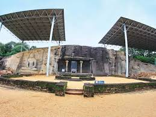
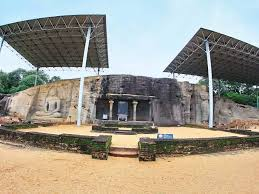

Before restoration Gal viharaya

Gal Vihara, also known as Gal Viharaya, are a series of stone sculptures of Buddha which were created during the reign of Sinhalese king Parakrama Bahu I (1153–1186) in the city of Polonnaruwa in Sri Lanka.
The site is located in the ancient city of Polonnaruwa in North Central Province, Sri Lanka. It was created during the 12th century by the king Parakrama Bahu I. Originally part of the king’s Northern Monastery, the Gal Vihara is comprised of four such carvings, each with an individual pose – thought to each represent a different stage in Buddha’s life – and of different sizes. Carved into the face of a large granite gneiss rock, the images are considered to be some of the best examples of ancient Sinhalese sculpting and carving arts, and make the monument the most visited at Polonnaruwa.
The largest one is 46 feet high and depicts a reclining Buddha, while the oldest of the group, which shows Buddha standing, is 23 feet high. The site was also where Parakramabahu I gathered a congregation of monks in order to purify the Buddhist priesthood, and later drew up a code of conduct for them. This code of conduct is recorded in an inscription on the same rock face containing the images of the Buddha.


Gal Viharaya Today
Today, the large site is hugely popular with tourists and Buddhist worshippers alike. The Gal Vihara statues are contained within an unsightly metal structure but are still well worth seeing due to their historical importance and detailed craftsmanship. It is also recommended that you take a guide around the whole site of Polonnaruwa, as there are many stunning sites to see which require detailed explanation. Appropriate clothing is expected, and no shoes are allowed to be worn at the site.
.jpg)
.jpg)
.jpg) 

Getting to Gal Viharaya
From the centre of Polonnaruwa, the site is reachable in around 10 minutes via the A11 road. There are also a number of buses – the 48-1, 48-3, 48-13, 48-16, and 48/218-1 – which depart from Jayanthi Film Hall every 15 minutes or so and take around 50 minutes. It is possible to walk – though it might be a long and hot journey, although the routes are mainly flat – and takes around 50 minutes via the Gallambarawa Road.
Quotation of Archaeological Commissioner's H.C.P. Bell's 1907 report on the Gal Vihara in Polonnaruwa
"Excavations were limited in 1907 to two important temples, the Buddhist " Gal Vihare" and Siva Devale No. 1—that chief of the Hindu shrines of Polonnaruwa—for the past seventy years at least strangely mistermed "Dalada Maligawa." Both these sites are characteristic of the semiantagonistic faiths which ruled at Polonnaruwa, at times with that tacit rivalry and mutual toleration of broad-minded religionists, anon, when the tide of fanaticism rose beyond control, ousting each other's fanes and wrecking the images.
"Gal Vihare."
The first site attacked was the " Gal Vihare." This rock-hewn shrine—strictly " Kalugal Vihare," or "the Black rock (granite) Temple "—stands unrivalled as, in its special features, the most impressive antiquity par excellence to be seen in the Island of Ceylon, and possibly not rivalled throughout the Continent of India. The fine of gigantic figures carved from the gray rock which forms their background, calm, immovable, majestic, amid the hush of the surrounding forest, gazing ever fixedly into space with the pensiveness of profound meditation, or wrapped in eternal slumber, must inspire in the thoughtful beholder wonder and admiration, mingled with an instinctive sense of silent awe. The irresistible charm and sublimity of the " Gal Vihare " could not but appeal forcibly to the few observant visitors who, for the last century, have chanced to view it in its peaceful wooded seclusion untouched by axe and spade. Their impressions (recorded below) leave little need for further " general description." It remains but to marshal in order those necessary, if dry-as-dust, details and measurements which an Archaeological Report is bound to furnish forth for scientists and others interested in such minutiae.
Lieut. Fagan, who found his way to Polonnaruwa nearly a hundred years ago (1820), pushed energetic exploration of the jungle-buried ruins as far north as the " Gal Vihare " : On advancing about half a mile further in the jungle I came upon what at first view appeared a large black rock, about 80 ft. long and 30 high in the centre, and sloping towards the ends, and on advancing a few steps further found myself under a black and gigantic human figure at least 25 ft. high. I cannot describe what I felt at the moment. On examination I found this to bo a figure of Budhoo in an upright posture, of excellent proportions and in an attitude, I think, uncommon, his hands laid gracefully across his breast and his robe falling from his left arm. Close on his left lies another gigantic figure of the same sacred personage, in the usual recumbent posture. I climbed up to examine it more minutely and found that the space between the eyes measured one foot, the length of the nose 2 ft. 4 in., and the little finger of the hand under his head 2 feet. The size of the figure may be guessed from these proportions. On the left of the standing figure is a small door of the Vihari, and on the right of the door another figure of the god of the same proportions as the former two and in the common sitting attitude. These figures are cut out clear from the rocks, and finely executed ; but whether each is formed of one or more pieces I forgot to examine. The entrance to the Vihari is arched with a pilaster on each side cut out of the rock, the old wooden door in good preservation. Within sits Budhoo on a throne, a little above the human size with his usual many headed and many-handed attendants. The apartment is narrow and the ceiling low and painted in red ornament, the whole resembling others that I have seen in the Seven Corles, Matale, &c. Between the door and the standing figure the rock is made smooth for about 6 ft. square, and this space is covered with a close written Kandian [sic] inscription perfectly legible. I may have overlooked many interesting points in this great monument of superstition, but it was nearly dark and I was obliged to return to Topary. Various names are assigned by the people to the other buildings, but they all agree in calling this Galle Vihari. (1)
Twenty years afterwards (1841) Major Forbes included a description of the " Gal Vihare " in his notice of the ancient structures of Poloimaruwa : Projecting from the perpendicular face of a large rock, in the strongest relief, are three colossal figures of Buddha : they are in the usual positions, sitting, standing, and reclining ; the last-mentioned being upwards of forty feet in length. According to minute directions which the Cingalese possess, these positions of Gautama are, and his features ought to be, retained without variation. Between the sitting and standing figures, the Isuramuni [sic], or Kalugalla wihare, has been cut in the hard rock. In this cavern-temple part of the stone has been left, and afterwards shaped into the figure of Buddha seated on a throne : the two pillars in front of this wihare are also part of the solid rock. These works were completed in the twelfth century, and in the reign of Prakrama Bahoo ; yet are not only undecayed, but the most minute ornaments are sharp and undiminished by time or weather. (2)
Some fourteen years later (1855) Sir Samuel Baker, whose sporting propensities took him far afield, thus describes " the rock temple" as he saw it in 1855 : At the further extremity of the main street, close to the opposite entrance gate, is the rock temple with the massive idols of Buddha flanking the entrance . . . . . . . . . . The most interesting, as being the most perfect, specimen is the small rock temple, which, being hewn out of the solid stone, is still in complete preservation. This is a small chamber in the face of an abrupt rock, which doubtless, being partly a natural cavern, has been enlarged to the present size by the chisel ; and the entrance, which may have been originally a small hole, has been shaped into an arched doorway. The interior is not more than perhaps twenty-five feet by eighteen, and is simply fitted up with an altar and the three figures [sic] of Buddha, in the positions in which he is usually represented, the sitting, the reclining, and the standing postures.
The exterior of the temple is far more interesting. The narrow archway is flanked on either side by two inclined planes, hewn from the face of the rock, about eighteen feet high by twelve in width. These are completely covered with an inscription in the old Pali [sic] language, which has never been translated. Upon the left of one plane is a kind of sunken area hewn out of the rock, in which sits a colossal figure of Buddha, about twenty feet in height.
On the right of the other plane is a figure of standing posture about the same height. Still further to the right, likewise hewn from the solid rock, is an immense figure in the recumbent posture, which is about fifty-six feet [sic] in length, or, as I measured it, not quite nineteen paces. These figures are of a far superior class of sculpture to the idols usually seen in Ceylon, especially that in the reclining posture, in which the impression of the head upon the pillow is so well executed that the massive pillow of gneiss rock actually appears yielding to the weight of the head.
This temple is supposed to be coeval with the city, which was founded about 300 years before Christ [sic] and is supposed to have been in ruins for upwards of 600 years. (3) Sir Emerson Tennent's too brief notice (1860) of the " Gal Vihare" is best known. It is illustrated by a reliable woodcut :
The most remarkable of all the antiquities at Topare, is the Gal-wihara, a rock temple hollowed in the face of a cliff of granitic stone which overhangs the level plain at the north of the city. So far as I am aware it is the only example in Ceylon of an attempt to fashion an architectural design out of the rock after the manner of tho cave temples of Ajunta and Ellora. The temple itself is a little cell, with entrances between columns ; and an altar at the rear on which is a sedent statue of Buddha, admirably carved, all forming undetached parts of the living rock. Outside, to the left, is a second sedent figure, of more colossal dimensions, and still more richly decorated. To the right are two statues likewise of Buddha, in the usual attitudes of exhortation and repose. The length of the reclining figure to the right is forty-five feet, the upright one is twenty-three, and the sitting statue to the left sixteen feet from the pedestal to the crown of the head. Between the little temple and the upright statue the face of the rock has been sloped and levelled to receive a verbose inscription, no doubt commemorative of the virtues and munificence of the founder. The Mahawanso records the formation of this rock temple by Prakrama Bahu, at the close of the twelfth century, and describes the attitude of the statues "in a sitting and a lying posture, which he caused to be hewn in the same stone." With the date thus authenticated, one cannot avoid being struck by the fact that the art exhibited in the execution of these singular monuments of Ceylon was far in advance of that which was provalent in Europe at tho period when they were erected. (4) In 1858 Mr. J. W. Birch of the Civil Service and Lieut. R. W. Stewart, R. E., visited Polonnaruwa, and were probably the first to photograph its ruins. This is all they have to say of the " Gal Vihare": From the face of a long rock near are carved stone figures of Buddha, in the sitting, standing, and recumbent postures. Between the sitting and standing figures is a small temple hollowed out of the solid rock, with an altar piece and figure of Buddha inside. On a part of the rock, which is flattened like a plane, are cut several lines of an inscription, apparently in the Nagari [sic] character. It is a very beautiful work, and is generally called the Kalugala Vihare , though it is referred to occasionally in the books as Isura Muni Vihara. It is said to have been executed by the orders of Prakrama Bahu. (5)
Within a few years (1876) Fergusson's " History of Architecture " provided archaeologists with the first account by an expert : If not the oldest, certainly the most interesting group at Pollonarua is that of the rock-cut sculptures known as the Gal Vihara. They are not rock-cut temples in the sense in which the term is understood in India, being neither residences nor chaitya halls. On the left, on the face of the rock, is a figure of Buddha, seated in the usual cross-legged conventional attitude, 16 ft. in height, and backed by a throne of exceeding richness : perhaps the most elaborate specimen of its class known to exist anywhere. Next to this is a cell, with two pillars in front, on the back wall of which is another seated figure of Buddha, but certainly of a more modern aspect than that last described ; that appearance may, however, be owing to whitewash and paint which have been most liberally applied to it. Beyond this is a figure of Buddha, standing in the open air; and still further to the right another of him, lying down in the conventional attitude of his attaining Nirvana. This figure is 45 ft. long, while the standing one is only 25 ft. high. These Nirvana figures are rare in India, but there is one in the most modern cave at Ajunta, No. 26, and others in the latest caves at Nassick and Salsette. None of these, however, so far as I know, ever attained in India such dimensions as these. In another century or two they might have done so, but the attainment of such colossal proportions is a sure sign of their being very modern. (6)
Finally, Mr. Burrows in his "Guide to the Buried Cities" has furnished almost the latest description of Ceylon's archaeological chef d'oeuvre in rock : The " Gal Vihara " (rock temple) consists of three figures of heroic size, and a shrine containing a smaller figure ; they are all carved out of the same abrupt boulder of dark granite. The southernmost figure represents the sedent Buddha in the conventional attitude, and is 15 ft. high above the pedestal. The back ground of the figure is elaborately carved : from the squares of the pilasters dragons' heads project ; and from the mouth of each issues a small lion. Higher up are representations of Hindu pagodas. The pedestal on which the figure sits has a bold frieze of lions alternating with a curious emblem which may be a pair of dragons' heads [sic] reversed. Next to this figures comes the shrine, which is cut out of the solid rock, and contains a rock-cut sedent figure of Buddha, 4 ft. 7 in. high, seated on a pedestal 3 ft. high. The background of the figure is profusely decorated with " deviyos " (minor divinities) bearing torches, grotesque lions, lotuses, &c. ; and the pedestal of the statue has a frieze of alternate lions and the dragons' heads. The whole has unfortunately been much disfigured by modern attempts to paint it on the part of a priest whose enterprise was in advance of his taste. Between the shrine and upright figure , the face of the rock has been smoothed to receive a long inscription of no particular interest. It consists of 51 lines of writing, and measures 13 ft. 9 in. The erect figure, which is 23 ft. high, and stands on a circular pedestal ornamented with lotus leaves, represents " Ananda," the favourite disciple of Buddha, grieving for the loss, or rather the translation, of his master. The figure has generally been taken for a Buddha, but erroneously, as it is obviously not in the conventional attitude of the standing Buddha ; and further the Mahawanso distinctly states that King Parakkrama Bahu " caused statues of Buddha in a sitting and a lying posture to be carved out of the same rock," making no mention of an upright statue of Buddha. The reclining figure of Buddha is by far the finest of the three. It measures 46 ft. in length, and has suffered little from the ravages of time. The expression of complete repose upon the face, the listless attitude of the arm and hand, the carefully arranged folds of the robe, together with the extreme stillness of the surrounding jungle, combine to form a wonderful realisation of the ideal Nirvana."